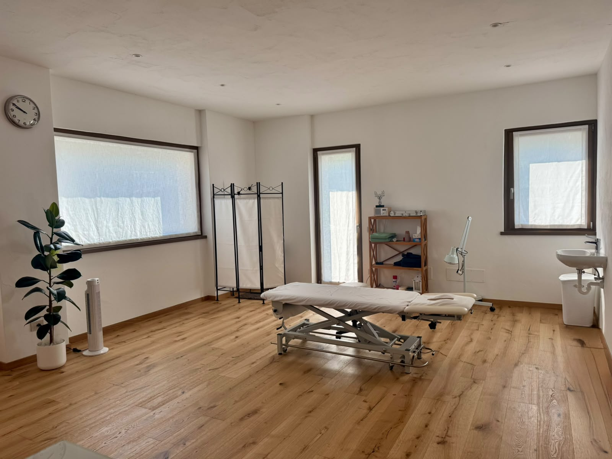
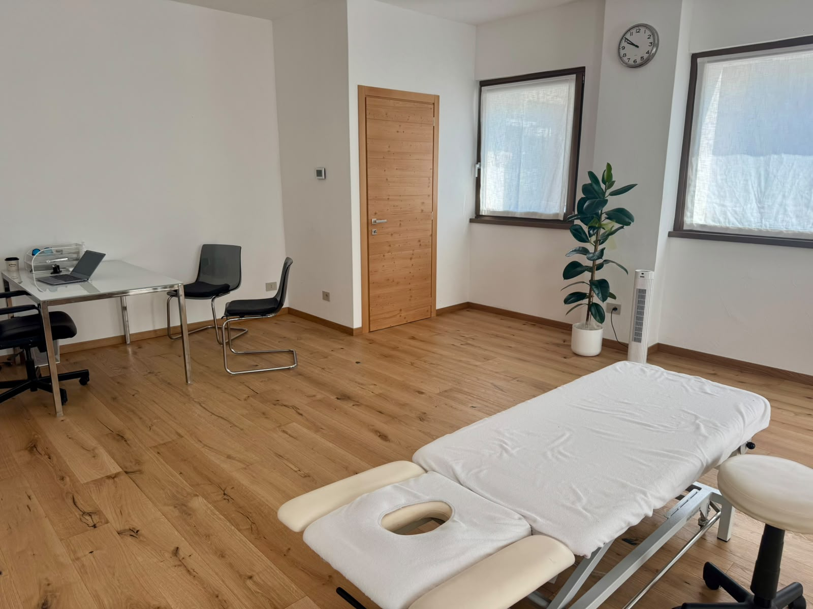
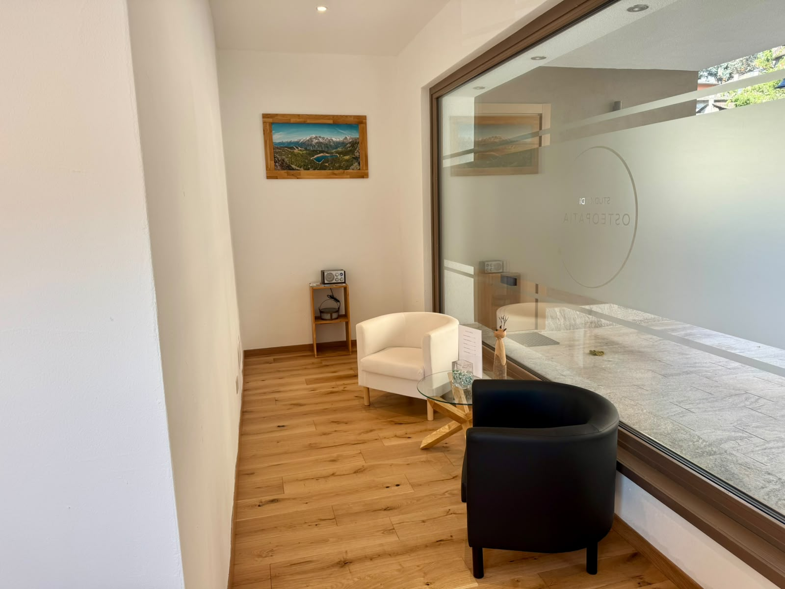

Mi chiamo Alessandro Mozzarelli e sono osteopata. Aiuto persone di ogni età — sportivi, lavoratori e anziani — a ridurre il dolore e migliorare la qualità della vita attraverso trattamenti personalizzati.
Mi sono diplomato presso l’International College of Osteopathic Medicine (ICOM) e ho successivamente conseguito un Master in Scienze Osteopatiche a Londra, oltre al diploma di Massoterapista a Milano.
Nel corso della mia formazione ho maturato esperienza in ambito clinico e sportivo, sviluppando un approccio pratico e mirato alle esigenze della persona.
Dal 2016 collaboro con ICOM College di Milano come assistente alla docenza, attività che mi permette di rimanere costantemente aggiornato e approfondire il mio lavoro.
Ricevo su appuntamento tra Milano e Chiesa in Valmalenco, in un ambiente professionale e accogliente.

